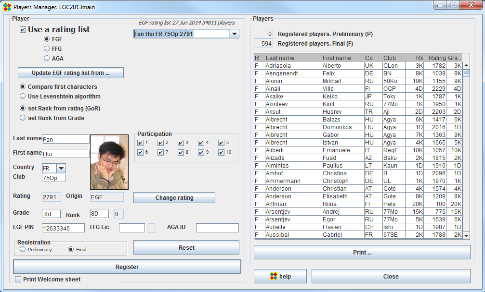
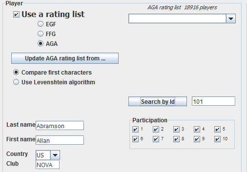

Players Manager frame
With the Players manager frame, you can register or unregister players, and modify players data.
You normally use it to register players and print the players list at the beginning of the tournament. You also use it during the tournament, for instance to change participation or correct any data.

Rating Lists
OpenGotha incorporates EGF, FFG and AGA rating lists.
A copy of each of the rating lists is delivered with OpenGotha. You can download up-to-date rating lists by clicking the "Update XXX rating list from ..." button.
These rating lists enable fast and spelling-error-free access to known players. Type in the first letters of the player and known players with same first letters will show up.
If you are not sure of first letters, then use Levenshtein algorithm. OpenGotha will do its best to find players with similar names.
A rank will be calculated from the rating as it appears in the rating list.
With EGF rating list,
a rating between 50 and 149 will give a 20K rank
a rating between 2050 and 2149 will give a 1D rank
a rating equal to or above 2850 a 9D rank
With FFG rating list,
a rating equal to or below -2901 will give a 30K rank
a rating between 0 and 99 will give a 1D rank
a rating equal to or above 800 will give a 9D rank
With AGA rating list,
a rating equal to or below -30.01 will give a 30K rank
a rating between -2.00 and -1.01 will give a 1K rank
a rating between 1.00 and 1.99 will give a 1D rank
a rating equal to or above 9.00 will give a 9D rank
With EGF rating list, you can select the set Rank from Grade radio button. The rank will then be defined from the grade.
Register a player
You can enter (automatically by rating list or manually) players data. Define participation (by default, the player is assumed to participate in all rounds).
Define Registration status (Preliminary or Final). Then Register by clicking Register or by typing Enter key.
Players data will be editable during the whole tournament by selecting a player in the Players panel, right click, "Modify player", or simply double-click.
Search by Id (AGA only)

Give an AGA Id and click the "Search by Id" button.
Players names
OpenGotha supports all the character sets :

Welcome sheet
The welcome sheet displays general information about the tournament and specific information about the player.
It may be printed out and given to each player after registration.
The Tournament organizer can customize the welcome sheet by editing it.
The welcome sheet is located in [OpenGotha Root Directory]/welcomesheet/welcomesheet.html.
A template welcome sheet is supplied.
Edit general information with any text processor, keeping html syntax.
Insert the player-related tokens where desired.
Player-related tokens are :
<name>, <firstname>, <country>, <club>, <rank>, <rating>, <ratingorigin>, <participation>
At run time, the tokens will be replaced by the player actual information.
<rank> is the rank between 30K and 9D
<rating> is the rating as found in the rating list
<ratingorigin> is the name of the rating list : EGF, FFG or INI. If the rating has not been defined by a rating list, the rating is defined from the rank and rating origin is INI.
<participation> defines the participation of the player for each round.